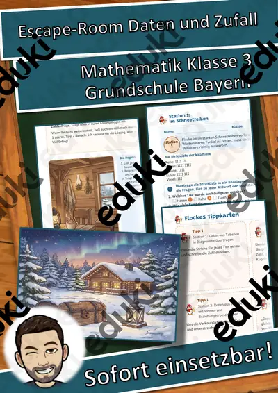

Advents-Rätselreise Materialpaket Klasse 1–4: 3 Adventskalender mit Geschichten + Rätseln in 3 Stufen, QR-Audio
24 Tage bis Weihnachten – für jede Jahrgangsstufe die passende RätselreiseIm Winterwald bereiten fünf Tiere heimlich ein Lichterfest vor. Jeden Tag geht in ihrer Winterwerkstatt etwas schief – die Kinder helfen mit einem Rätsel und sammeln dafür einen Buchstaben. Am 24. Dezember ergibt sich der geheime Lösungssatz. Das Paket enthält drei vollständige Adventskalender mit derselben Rahmenhandlung, aber jeweils eigenen Texten, Rätseln und Lösungssätzen – für Klasse 1, Klasse 2 und Klasse 3/4. Ideal für jahrgangsgemischte Klassen, Schulen mit mehreren Klassen oder zum Weiterverwenden im nächsten Jahr.
Preisvorteil: Einzeln kosten die 3 Kalender zusammen 8,97 €. Im Paket zahlst du nur 5,99 € (rund 33 % gespart).
Die 3 Kalender
Advents-Rätselreise Klasse 1: 24 Tagesseiten, Lösungssatz „ALLE FEIERN DAS LICHTERFEST“Advents-Rätselreise Klasse 2: 24 Tagesseiten, Lösungssatz „DIE LICHTER IM WALD LEUCHTEN“Advents-Rätselreise Klasse 3/4: 24 Tagesseiten, Lösungssatz „GEMEINSAM LEUCHTEN WIR HELL“In jedem Kalender (30 Seiten + Deckblatt)24 Tagesseiten: Geschichte + QR-Code zum Anhören + Rätsel in drei Stufen (★ führt zum Tagesbuchstaben, ★★ und ★★★ vertiefen)24 verschiedene Rätselarten: Logical, Sudoku, Geheimschrift, Labyrinth, Wortgitter, Kreuzworträtsel, Rechenmauer, Zahlenfolgen, Reime, Silben, Satzpuzzle u. v. m.Übersicht mit Lehrkraft-Hinweisen, Figurenkarten, Lösungssatz-Leiste, Lösungen zu allen Stufen
Zahlen: 3 Kalender · 72 Geschichten · 72 Hörtexte per QR · 216 Rätselaufgaben · 90 Seiten + 3 Deckblätter.
Figuren und Piktogramme aus Noto Color Emoji (offene Lizenz), Audio per Sprachsynthese, Texte und Rätsel mit KI-Unterstützung erstellt und geprüft. Keine Fotos, keine realen Personen.
Viel Freude beim Vorlesen, Rätseln und Sammeln wünscht Snice! :)
Ähnliche Materialien

Escape-Room Daten und Zufall Klasse 4 – Mathematik Klasse 4 Grundschule: 6 Stationen, 2 Schlösser

Escape-Room Größen und Messen Klasse 4 – Mathematik Klasse 4 Grundschule: 6 Stationen, 2 Schlösser
Escape-Room Raum und Form Klasse 4 – Mathematik Klasse 4 Grundschule: 6 Stationen, 2 Schlösser

Escape-Room Zahlen bis zur Million – Mathematik Klasse 4 Grundschule: 6 Stationen, 2 Schlösser

Escape-Room Daten und Zufall – Mathematik Klasse 3 Grundschule: 6 Stationen, 2 Schlösser

Escape-Room Daten und Zufall Klasse 2 – Mathematik Klasse 2 Grundschule: 6 Stationen, 2 Schlösser
Escape-Room Größen und Messen – Mathematik Klasse 2 Grundschule: 6 Stationen, 2 Schlösser